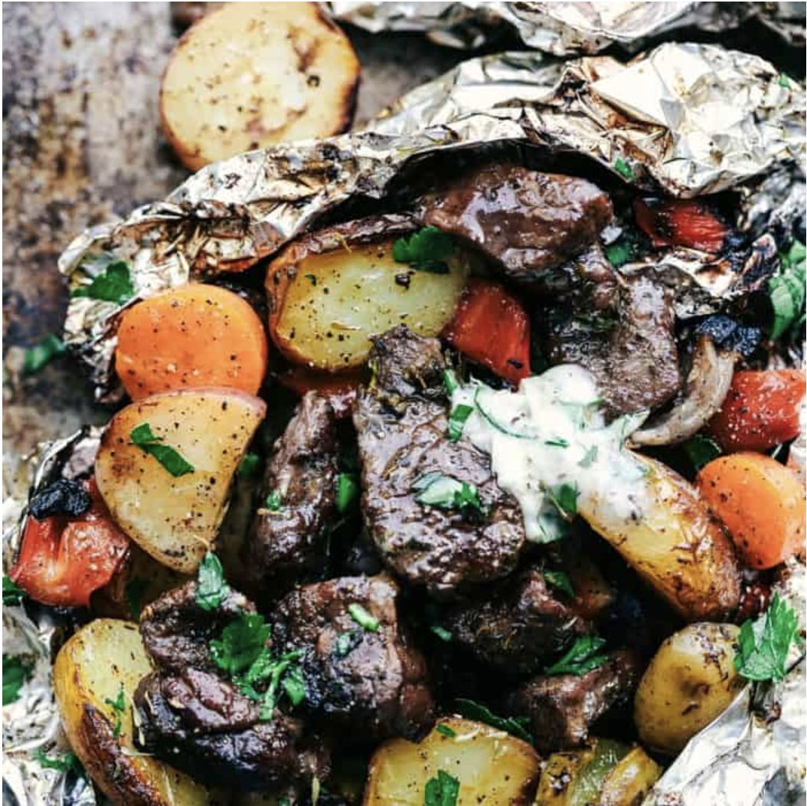

Garlic Herb Steak Foil Packs

Steak
Red Potatoes
Carrots
Red and Green Bell Peppers
Red Onion
Butter
Parlsley
Rosemary
Thyme
Garlic Cloves(Whole)
Salt and Pepper
Olive Oil
Directions
- Chop up Red Potatoes, Carrots, and Peppers
- Cut Steak in bite-sized pieces
- Toss Veggies with oil, salt and pepper then set aside
- Mix softened butter with herbs
- Place ingredients inside foil packs
- Grill for 15 mins